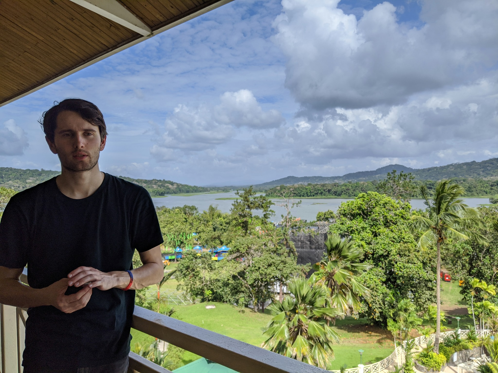

git config --get remote.origin.urlHi! This is the personal page of Brian McPeak! I'm a postdoc at Syracuse University working on AI and theoretical physics. My physics research is in quantum gravity and bootstrap methods; my AI interests are on memory, interpretability, scaling laws, and alignment. You can download my CV here.
For my works in physics, see my arXiv or my INSPIRE.
For my writings, about AI and other things, see my Substack. See also my GitHub page.
Anyone who wants to get in touch regarding physics, AI, or anything else should feel free to email me at brian@mcpeak.ai. I just moved to SF and would be happy to have some people to take walks and talk science with!